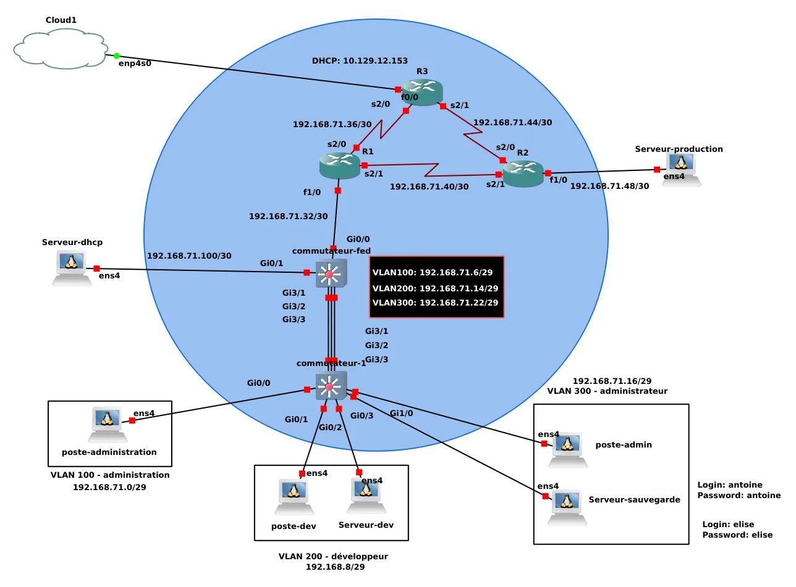

Construire un réseau d'entreprise
Conception et déploiement d'un réseau d'entreprise sécurisé et redondé, émulé sous GNS3.
- Cadre
- BUT R&T
- Outils
- GNS3 - Packet Tracer
- Équipements
- Cisco
- Statut
- Terminé
01En résumé
Objectif
Mettre en place une infrastructure d'entreprise segmentée, redondée et sécurisée.
Ma contribution
Conception de la topologie et du plan d'adressage, configuration des équipements et des services.
Résultat
Réseau entièrement fonctionnel : segmentation, routage dynamique, filtrage et services opérationnels.
02Le projet
Topologie incluant la segmentation par VLAN, la redondance avec VSTP (spanning tree par VLAN), le routage dynamique RIP et des listes de contrôle d'accès. Le projet comprend aussi le déploiement de services : serveur FTP pour le partage de fichiers et serveur web Apache pour les applications internes.
03Démarche
- Analyse des besoins : compréhension des exigences du projet.
- Conception : prototype sur Cisco Packet Tracer et plan d'adressage IP.
- Configuration : commutateurs, routeurs et services réseau.
- Tests progressifs : validation de chaque composant avant intégration.
- Sécurisation : ACL et port-security.
- Documentation : procédures et schémas techniques.
04Technologies
- VLAN / VTP
- Segmentation et propagation des VLAN
- VSTP
- Spanning tree par VLAN
- RIP
- Routage dynamique et inter-VLAN
- ACL / NAT
- Filtrage et traduction d'adresses
- DHCP - FTP - HTTP
- Services réseau
- GNS3
- Émulation réseau
05Galerie

06Compétences BUT mobilisées (Apprentissage Critique)
AC11.02Comprendre l'architecture et les fondements des systèmes numériques, des
principes du codage de l'information, des communications et de l'Internet
Lecture et interprétation de l'architecture réseau complète : segmentation en VLAN, plan d'adressage IP, routage inter-VLAN et rôle des différents équipements (switchs, routeurs, serveurs). Compréhension des mécanismes de communication de niveau 2 et 3 (encapsulation, ARP, tables de routage).
AC11.03Configurer les fonctions de base du réseau local
Configuration des commutateurs (VLAN, VTP, port-security, VSTP) et des routeurs (interfaces, routage dynamique RIP, ACL, NAT). Mise en place des services réseau associés : DHCP, FTP et HTTP.
AC11.04Maîtriser les rôles et les principes fondamentaux des systèmes d'exploitation
afin d'interagir avec ceux-ci pour la configuration et l'administration des réseaux et services fournis
Administration des serveurs de services (FTP et serveur web Apache) sur leurs systèmes d'exploitation respectifs, et paramétrage des équipements réseau dans l'environnement GNS3 (IOS Cisco).
AC11.05Identifier les dysfonctionnements du réseau local et savoir les signaler
Tests progressifs de chaque brique (VLAN, routage, ACL, services) avant intégration, identification des erreurs de configuration (mauvais VLAN, ACL bloquante, route manquante) et remontée documentée des problèmes à l'équipe.
AC11.06Installer un poste client, expliquer la procédure mise en place
Déploiement de postes clients dans la maquette GNS3 (VPCS ou machines virtuelles), configuration IP/DHCP et vérification de l'accès aux services. Documentation de la procédure pour reproduire un poste client fonctionnel sur le réseau.
07Bilan
Ce que j'en retiens
Une prise en main efficace de GNS3 pour émuler des environnements réseau, et la consolidation des VLAN, du routage dynamique et des ACL.
Avec du recul
J'aurais consacré plus de temps à la planification initiale (au-delà du plan d'adressage) et j'aurais approfondi certains concept comme le VSTP.